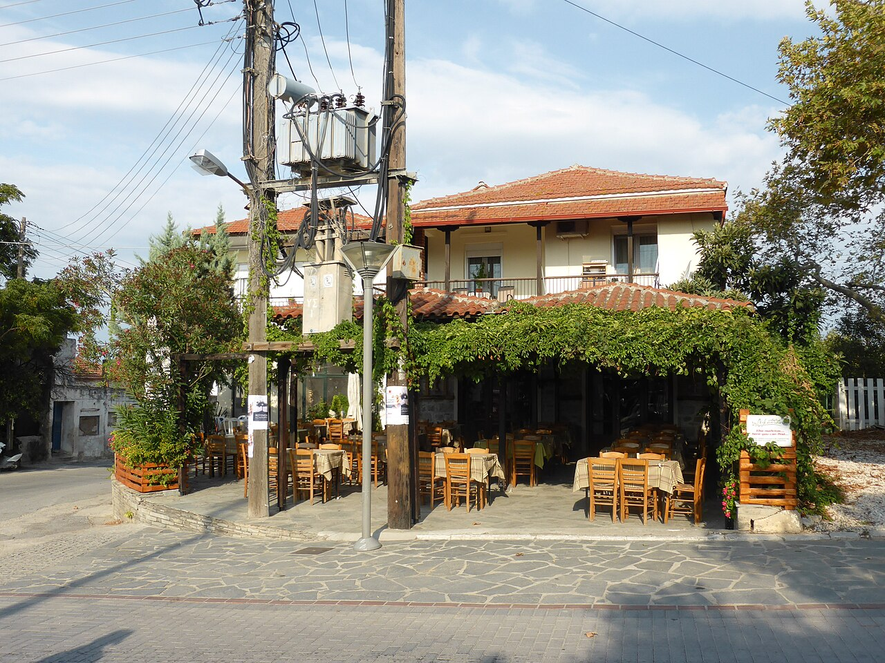

Χωριάτικη σαλάτα · Гръцка салата
Домати, краставица, лук, маслини и фета · Synagrida 14,50 € · проверено 21.08.2026.
Νικήτη · Халкидики
Менюта с публикувани цени
Нормализирани типове ястия от официалните менюта на Synagrida и Taverna Marina. Размери, гарнитури и дребни варианти не са отделни записи.
Домати, краставица, лук, маслини и фета · Synagrida 14,50 € · проверено 21.08.2026.
Ечемичен сухар с домат и маслинова паста · Synagrida 14,50 €.
Студена млечна разядка · Synagrida 7 € · Marina 6,50 €.
Фета, люта чушка и зехтин · Synagrida 7 € · Marina 6,50 €.
Пюре от жълт грах с каперси · Synagrida 7 €.
Лозови листа с ориз и билки · Marina 7,50 €.
Боб в доматен сос · Marina 8,50 €.
Хрупкави тиквички със сос · Synagrida 8 € · Marina 7,50 €.
Сирене, мащерков мед и мак · Synagrida 9,50 €.
Хрупкава фета със сусам и мед · Synagrida 9,50 €.
С лук и лимонов дресинг · Synagrida 9,50 € · Marina 8 €.
Лимон, пипер и мащерка · Synagrida 10 €.
Със зехтин и лимон · Synagrida 16,50 €.
С айоли и лимон · Synagrida 13,50 €.
Соев сос, сусам и лайм · Synagrida 26 €.
Диви зелени листа и авголемоно · Synagrida 28 €.
С фава и карамелизиран лук · Synagrida 20 €.
Домат, фета и босилек · Synagrida 21 €.
Скариди, миди, октопод и калмари · Synagrida 21,50 €.
Synagrida 22 € · Marina 24 €.
Патладжан, картоф, кайма и бешамел · Marina 13 €.
Ориз и билки · Marina 10 €.
Marina 7 € малка / 12 € голяма.
С питка, картофи и дзадзики · Synagrida 18,50 €.
С шамфъстък и ванилов сладолед · Synagrida 14,50 €.
Физически в Никити · пълно хранене
Включени са проверимо идентифицирани ресторанти, таверни, грилове и пицарии. Кафенета, пекарни и десертни обекти без пълно меню са изключени.

40.217565, 23.664579 · +30 23750 22123 · гръцка и средиземноморска кухня · публикувано пълно меню.
40.216178, 23.666768 · италиански ресторант · няма достатъчно данни за рейтинг.
40.215712, 23.667414 · гръцки грил · няма достатъчно данни за моментен рейтинг.
40.216633, 23.665645 · +30 23750 22660 · Google 4,2 / 1007 · Tripadvisor 3,9 / 154.
40.217260, 23.665759 · пристанищна зона · няма достатъчно данни за кухня и рейтинг.
40.216977, 23.665614 · гръцка и средиземноморска кухня · цени €€.
40.217354, 23.666392 · пицария-ресторант · цени €€.
40.216514, 23.666236 · ресторант · няма достатъчно данни.
40.215253, 23.667899 · кафе-ресторант-бар с пица и морски ястия.
40.214265, 23.668854 · +30 23750 23787 · Google 4,3 / 3463 · Tripadvisor 4,0 / 744.
40.213124, 23.670168 · крайбрежен ресторант · източниците използват две имена.
40.213373, 23.669651 · крайбрежен ресторант · няма достатъчно данни.
40.211018, 23.673317 · +30 23750 23554 · италианска и средиземноморска кухня.
40.211223, 23.673015 · +30 23750 23333 · гръцка кухня, риба и месо.
40.218098, 23.666448 · пица и брънч · няма достатъчно данни за рейтинг.
40.221932, 23.669660 · гръцки ресторант · няма достатъчно данни.
40.221543, 23.668016 · гръцка таверна · цени €€.
40.221142, 23.667792 · ресторант · няма достатъчно данни.
40.216350, 23.666350 · ресторант в пристанищната зона.
40.229682, 23.630090 · +30 23750 22496 · Google 4,6 / 1451 · Tripadvisor 4,6 / 462.
26 вида · само същински риби
Списъкът стъпва върху търговски важните за Гърция видове във FishBase, полевия определител на FAO и гръцки меню-речници. Октопод, калмар, скариди, миди и раци не са риби и не са включени.
Sparus aurata · златна ивица между очите · цяла на скара или фурна.
Dicentrarchus labrax · деликатно бяло месо · на скара или в солена кора.
Sardina pilchardus · малка мазна риба · на скара, пържена или маринована.
Engraulis encrasicolus · малка риба · пържена или маринована.
Mullus barbatus · червеникав с мустачета · най-често пържен.
Mullus surmuletus · надлъжни линии и мустачета · пържен или печен.
Scomber colias · мазна и плътна · на скара или маринована.
Scomber scombrus · тъмни напречни ивици · пушена или на скара.
Boops boops · големи очи и златисти линии · пържена или на скара.
Oblada melanura · черно петно при опашката · цяла на скара.
Diplodus sargus · вертикални линии · стегнато бяло месо.
Dentex dentex · едра хищна риба · на скара, фурна или в сол.
Pagrus pagrus · розово-сребрист · плътно и сочно месо.
Pagellus erythrinus · розова риба · пържена или печена.
Sarpa salpa · много златисти линии · постно месо.
Mugil cephalus · широка глава · на скара, печен или пушен.
Solea solea · плоска риба · нежно и постно месо.
Merluccius merluccius · люспесто бяло месо · пържен, печен или в супа.
Xiphias gladius · сервира се на стек · плътно месо.
Sarda sarda · диагонални линии · на скара или маринован.
Thunnus thynnus · тартар, леко запечен или на скара.
Epinephelus marginatus · масивна глава · печен или в супа.
Trachinus draco · отровни шипове в суров вид · само професионално почистена.
Scorpaena scrofa · бодливи перки · често в рибена супа.
Belone belone · издължена риба със зеленикави кости.
Trachurus mediterraneus · сребрист и умерено мазен · пържен или на скара.
Кости: всяка риба може да съдържа кости. Помолете ресторанта за почистване; този справочник не заменя указанията на персонала.
Никити и до 30 мин с автомобил
Ориентировъчните времена започват от кметството на община Ситония и не включват търсене на паркинг или сезонно задръстване.
40.230608, 23.672701 · ≈ 5 мин · традиционен квартал с каменни къщи и стръмни улици.
40.232948, 23.672936 · ≈ 5 мин · активен храм от XIX век.
40.232705, 23.672979 · ≈ 5 мин · в каменното училище от 1870 г.; провери работното време.
40.207736, 23.680082 · ≈ 7 мин · раннохристиянски археологически обект.
40.221855, 23.691679 · ≈ 8 мин · византийски останки; достъпът на терен не е гарантиран.
40.217155, 23.683864 · ≈ 7 мин · селищно място от бронзовата и желязната епоха.
40.252462, 23.723131 · ≈ 16 мин · археологическа зона и византийска кула.
40.249183, 23.694192 · ≈ 12 мин · традиционно вътрешно село с площад и музей.
Проверимо идентифицирани · до 30 мин
Blue Flag е годишно отличие, а не текущо измерване на всяка точка. Където няма надеждна стойност за чистота, размер, услуги или свободна зона, това е изписано директно.
40.215035, 23.667094 · ≈ 3 мин · пясък · качество „Отлично“ за 2024; проби 2025.
40.196070, 23.682979 · ≈ 8 мин · малък залив · няма достатъчно данни за услуги.
40.193480, 23.686048 · ≈ 9 мин · пясък и камъчета · ограничено паркиране.
40.191944, 23.693301 · ≈ 10 мин · пясък · организирани и свободни сектори.
40.181969, 23.709778 · ≈ 13 мин · пясък · сезонни услуги.
40.176665, 23.714549 · ≈ 15 мин · фин пясък · Blue Flag 2026 за сектора Kalogrias.
40.170223, 23.720880 · ≈ 17 мин · малки пясъчни заливи · ограничени услуги.
40.143494, 23.734124 · ≈ 20 мин · смесени сектори · две отличия Blue Flag 2026.
40.133666, 23.750815 · ≈ 23 мин · пясък · Blue Flag 2026 за хотелския сектор.
40.242331, 23.726715 · ≈ 17 мин · широка пясъчна ивица · Blue Flag 2026.
40.229927, 23.746382 · ≈ 20 мин · пясък · сезонно натоварване.
40.229894, 23.737964 · ≈ 17 мин · пясък и камъчета · близо до лодки.
40.209353, 23.762217 · ≈ 23 мин · малки пясъчни ивици · труден локален достъп.
Координатен обзор
Маркерите са позиционирани по локално съхранените координати. Фонът е схематичен и работи офлайн; Google Maps връзките в записите изискват интернет.